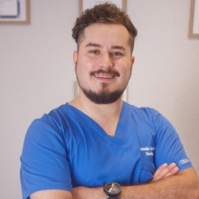

Rehabilitación de lesiones, tratamiento del dolor y dolor crónico, y rehabilitación post quirúrgica, con práctica basada en evidencia. En consulta o a domicilio.
Agenda por WhatsApp
También evaluación kinesiológica y visita domiciliaria. Pacientes particulares, con boleta reembolsable en todas las isapres.
Manuel Antonio Matta 2095, oficina 503
Antofagasta
Y atención kinesiológica a domicilio en Antofagasta.